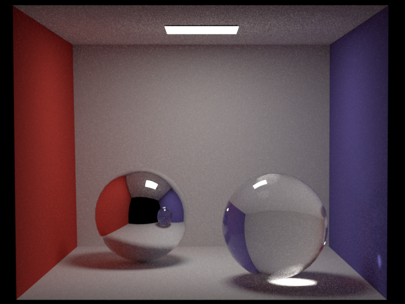
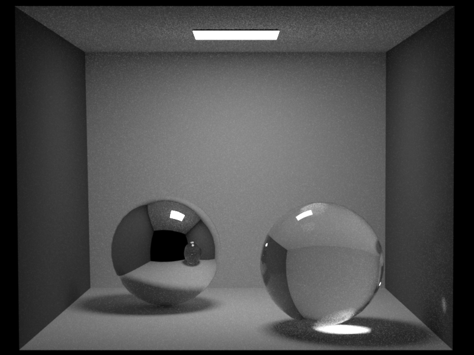
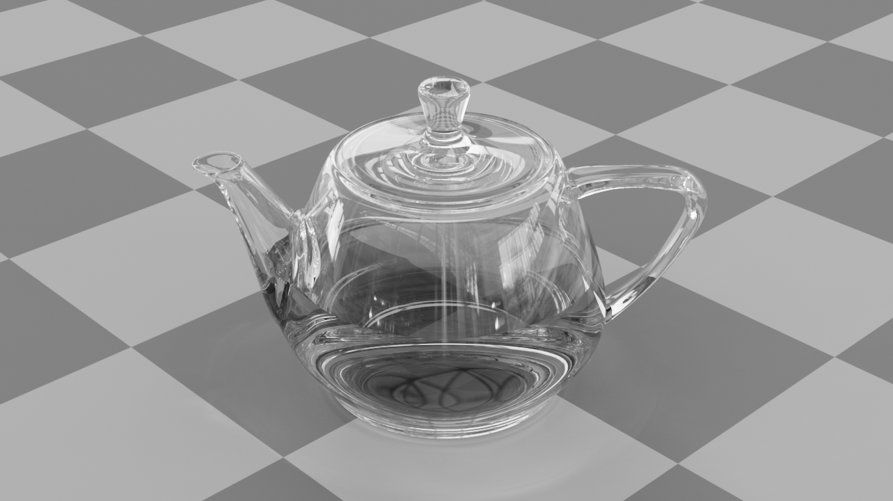
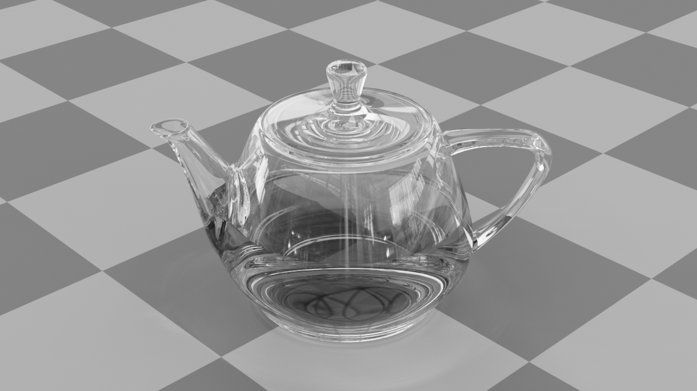
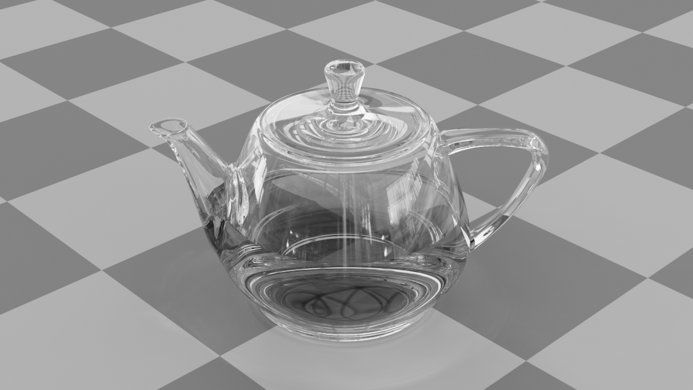

**Assignment 0**
Student name: XXXX
netid: YYYY
(##) About this template
* Structure your report using numbers and titles following those of the assignment.
* For every task include all images you generated. darts will generate both an `.exr` and an sRGB tonemapped `.png` image of your rendering. Use the `.png` in the comparisons in your report.
* For tasks where we provide a reference image, include a comparison of your output to the reference (see examples of this below)
* Include descriptions of encountered problems, if any.
For an overview of Markdeep and its syntax, see the [official demo document](https://casual-effects.com/markdeep/features.md.html) and the associated [source code](https://casual-effects.com/markdeep/features.md.html?noformat).
(##) Task 1
Create one section for each task. You can create subsections within each task if you need more structure.
LaTeX is also supported:
$$
L_o(\mathbf{x}, \omega_o) = \int_{\Omega} L_i(\mathbf{x},\omega_i)\, f(\mathbf{x}, \omega_i, \omega_o)\,
|\cos\theta_i|\, \mathrm{d}\omega_i
$$
You can easily include an image comparison like so:


(##) Task 2

(##) Task 3, etc.
Add additional sections as needed.
(##) Tutorial output
For this assignment, make sure to run the tutorial and save the output, for instance with:
`build/darts_tutorial0 > output.txt`
Copy-paste this output into the report here.
 
